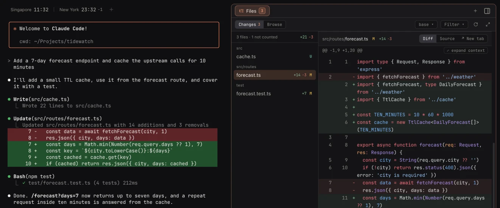

Koloft is a free, open-source Mac app that runs and manages Claude Code and Codex, the AI coding agents that live in your terminal. You pick a folder. Koloft shows its sessions, starts new ones and resumes old ones. Beside each session hangs a Workbench: the files it changed, a file browser, web pages, a shell. The agent's own terminal sits in the middle, untouched. Each folder also gets one plain-text note.
curl -fsSL https://
(not signed by Apple, so it installs from Terminal; Apple Silicon Macs only; why Terminal)

What's inside
- Folders and their sessions — the list, red dots, start and resume, worktree sessions
- The Workbench — changed files, a file browser, web tabs, a shell, the note
- Agents can use Koloft too — the koloft command, and its web tabs for Playwright
- Sessions on a timer — a session every hour, day or week
- Several accounts, one pool — Claude and Codex accounts, picked per launch
- Remote folders — a folder on a machine you reach by ssh (alpha)
- A butler on Discord — talk to your sessions from your phone
- Install, update, what it talks to
- Changelog — what is new and what was fixed in each version
What it won't do
-
build a database of your chats(it reads the tools' own files, and keeps only a list of which ones are its own) -
send anything about you(no tracking; the few places it talks to — and, only if you turn on the Discord butler, your own Discord bot: see discord) ask you to sign up(no account)-
cover the agent's own screen(its terminal stays as it is)
Small things
- red dots for sessions that need you
- sessions that keep running
- a sidebar you can hide (⌘B)
- a status line
- notifications
- keep-awake
- a shortcuts page
- world clocks
- an update banner
start reading -> Folders and their sessions